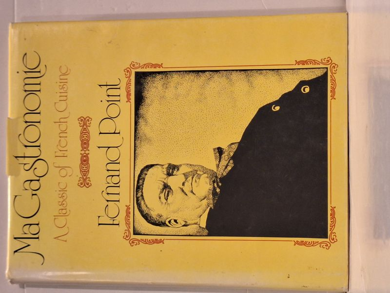

Ma Gastronomie
Fernand Point · Lyceum Books, Wilton, Connecticut, 1974

C$140 · Very Good condition
Ma Gastronomie by Fernand Point. Lyceum Books, Wilton, Connecticut, 1974. First English-language edition. Hardcover with dust jacket. The celebrated memoir and recipes of Fernand Point, chef-patron of La Pyramide and a founding figure of modern French cuisine. Translated and adapted by Frank and Patricia Kulla, with an introduction by Joseph Wechsberg and drawings by André Dunoyer de Segonzac.
Very Good condition: clean, unmarked text and sound binding. Dust jacket present with light edge wear and some toning. No inscriptions or library markings.
Details
- Publisher: Lyceum Books, Wilton, Connecticut, 1974
- Binding: Hardcover
- Edition: First English-language edition
- Condition: Very Good
- Dust jacket: Good
- Category: Cookery